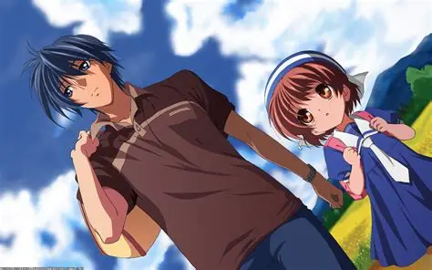
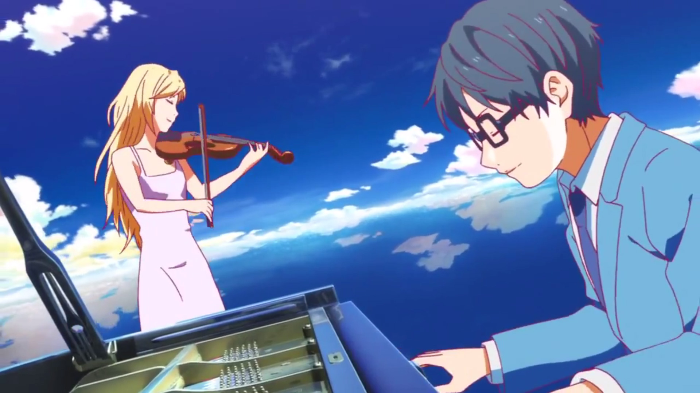
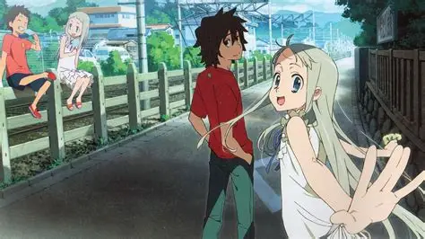
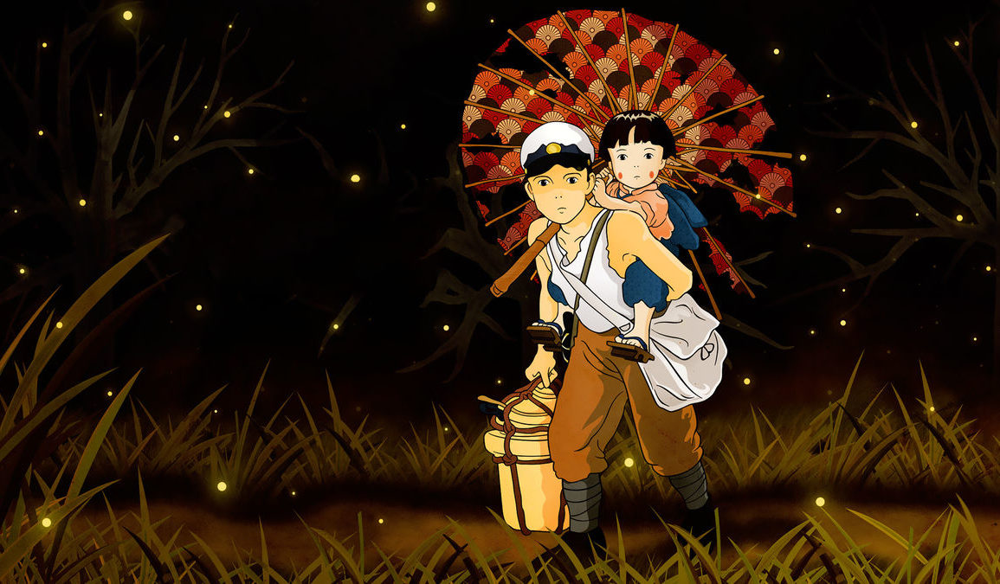
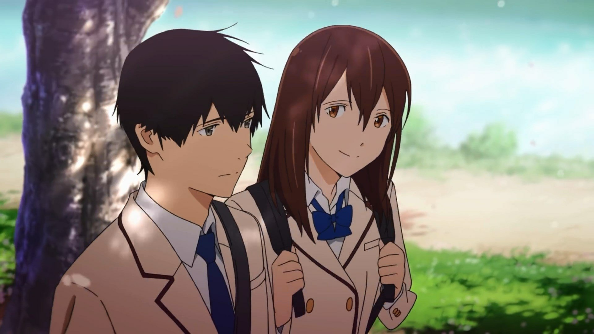
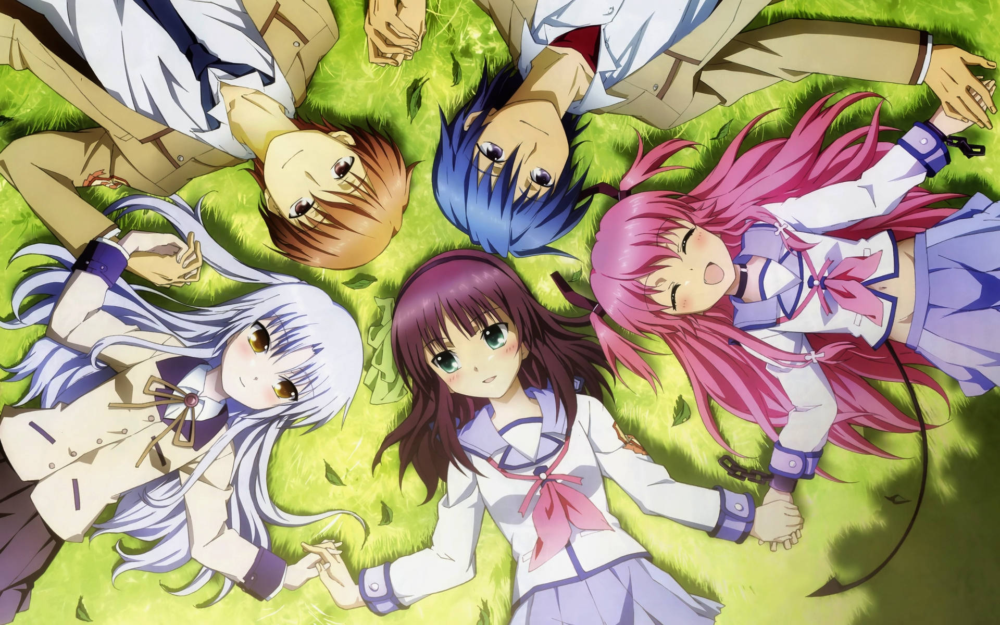
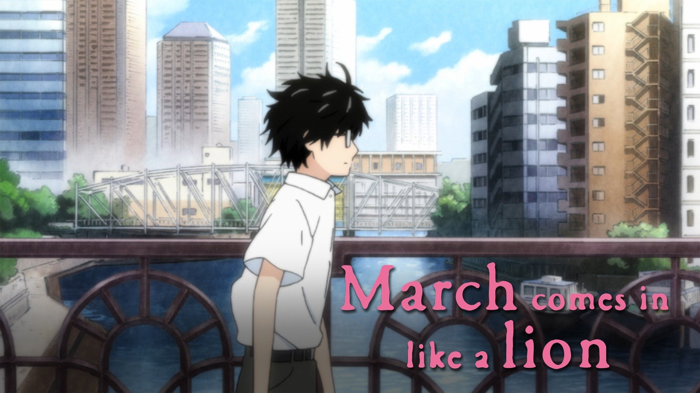
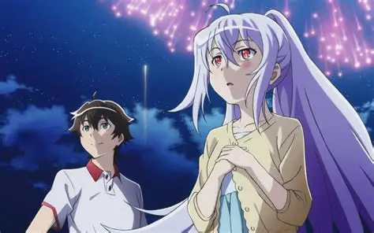
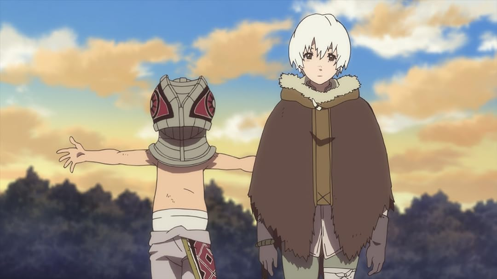

SMASH Senpai
Top 10 Anime That Will Make You Cry
Not all anime break you with fear — some destroy you emotionally. The most heartbreaking anime don’t rely on shock or violence, but on love, loss, regret, and the slow realization that some goodbyes are permanent.
This list ranks the Top 10 Anime That Will Make You Cry, featuring emotional masterpieces that explore grief, human connection, and the pain of moving forward. These stories don’t just make you sad — they stay with you.
Sponsored
#1 Clannad: After Story
Clannad: After Story is widely considered the most emotionally devastating anime ever made — not because it tries to make you cry, but because it portrays life with brutal honesty. The story follows Tomoya Okazaki as he steps into adulthood, facing responsibilities, love, and loss that feel painfully real.
Unlike many emotional anime, After Story doesn’t rely on sudden tragedy alone. Instead, it slowly builds deep emotional attachment through everyday moments — small conversations, quiet happiness, and fragile dreams. When loss finally arrives, it feels earned, inevitable, and crushing.
The anime explores themes of family, regret, and the fear of moving forward after everything falls apart. It shows how grief doesn’t disappear — it changes you. Scenes of isolation, despair, and emotional numbness resonate deeply because they mirror real human experiences.
Clannad: After Story doesn’t just make you cry — it leaves you emotionally exhausted. It is a reminder that love gives life meaning, even when it leads to unbearable pain.

play anime smash or pass here (not sponsored)
SMASH SENPAI – Smash or Pass#2 Your Lie in April
Your Lie in April is a heartbreaking blend of romance, music, and emotional trauma. The anime follows Kousei Arima, a piano prodigy who loses his ability to hear music after personal tragedy — until he meets Kaori Miyazono.
At first, the series feels bright and hopeful, filled with color and passion. But beneath the beauty lies unresolved grief and fear. Music becomes both a healing force and a reminder of pain, tying joy and sorrow together inseparably.
What makes the anime so devastating is how subtly it foreshadows its tragedy. The story gives moments of happiness just long enough for viewers to believe everything will be okay — before pulling that hope away.
Your Lie in April captures the pain of loving someone who cannot stay, and the courage it takes to keep moving forward. Its final moments linger long after the screen fades to black.
Sponsored
#3 Anohana: The Flower We Saw That Day
Anohana is a story about grief that never truly fades. It follows a group of childhood friends torn apart by the death of one of their own — a loss that silently shapes their lives years later.
The anime explores how everyone copes with loss differently: denial, guilt, anger, and emotional withdrawal. Each character carries unresolved pain, unable to move forward because they never said goodbye properly.
What makes Anohana so powerful is its raw emotional honesty. There are no villains, no dramatic twists — just people struggling to heal. The supernatural element serves only to bring buried emotions to the surface.
The final episodes are emotionally overwhelming, forcing both characters and viewers to confront the reality of letting go. Anohana doesn’t just make you cry — it makes you remember your own losses.
#4 Violet Evergarden

Violet Evergarden is emotional storytelling at its finest. The anime follows Violet, a former child soldier who struggles to understand emotions after the war ends.
Each episode presents a new story about love, separation, and regret. Violet writes letters for others, slowly learning the meaning behind the words she records. Through their pain, she begins to understand her own.
The anime’s quiet pacing allows emotions to breathe. Tragedy is portrayed gently but powerfully, often leaving viewers devastated by simple, human moments rather than dramatic events.
Violet Evergarden shows that healing takes time, and that understanding emotions can be both beautiful and painful. It is impossible to watch without shedding tears.
Sponsored
#5 Grave of the Fireflies
Grave of the Fireflies is not just sad — it is emotionally crushing. Set during World War II, the film follows two siblings struggling to survive as everything familiar collapses around them.
There is no heroic escape or comforting resolution. Hunger, abandonment, and indifference slowly strip away hope, making each moment more painful than the last.
The true horror of the film lies in how realistic it feels. The suffering isn’t exaggerated — it’s quiet, unavoidable, and devastating.
Grave of the Fireflies leaves viewers emotionally shattered. It is a reminder of how fragile life is, and how easily innocence can be destroyed.
#6 I Want to Eat Your Pancreas
I Want to Eat Your Pancreas is an emotional gut punch disguised as a quiet slice-of-life story. The anime follows a socially withdrawn boy who unexpectedly befriends Sakura Yamauchi, a cheerful girl secretly living with a terminal illness. From the beginning, the audience knows how this story will end — and that inevitability is what makes every moment hurt.
Rather than focusing on melodrama, the film builds emotional weight through simple interactions. Conversations feel natural, awkward, and painfully human. Sakura’s energy contrasts sharply with the looming reality of her condition, creating an emotional tension that never fully releases.
What makes the anime devastating is its honesty. It doesn’t romanticize illness or tragedy. Instead, it explores how people cope differently with mortality — some with fear, others with reckless joy. The protagonist’s emotional growth is subtle but deeply impactful.
The ending arrives suddenly, without dramatic buildup, mirroring how loss often happens in real life. It leaves viewers stunned, heartbroken, and emotionally hollow.
Sponsored
#7 Angel Beats!
Angel Beats! masterfully blends comedy, action, and emotional devastation. Set in a limbo-like afterlife, the anime follows a group of teenagers who died young and now resist moving on due to unresolved regrets.
At first, the series feels lighthearted, even chaotic. Characters joke, fight, and form bonds, making it easy to forget the underlying tragedy. But as the story progresses, individual backstories are revealed — each one exposing lost dreams, unfair deaths, and emotional wounds that never healed.
The true emotional power comes from acceptance. When characters finally confront their past and find peace, they disappear from the world. These moments are not triumphant — they are quietly heartbreaking, turning closure into loss.
Angel Beats! hurts because it shows that healing sometimes means saying goodbye forever. It leaves viewers emotionally drained, reflecting on regret, gratitude, and the fleeting nature of life.
#8 March Comes in Like a Lion
March Comes in Like a Lion is a deeply emotional exploration of depression, loneliness, and slow healing. The anime follows Rei Kiriyama, a professional shogi player who struggles with isolation, self-worth, and emotional numbness.
Unlike dramatic tragedies, this anime portrays sadness quietly. Rei’s pain is internal — conveyed through silence, heavy imagery, and introspective narration. His depression feels real, uncomfortable, and painfully relatable.
Moments of warmth arrive through human connection, particularly with a kindhearted family that slowly brings color back into Rei’s life. These moments are not miraculous cures — they are small steps forward, making them incredibly powerful.
March Comes in Like a Lion doesn’t aim to destroy viewers emotionally in one blow. Instead, it wears them down gently, reminding us how healing is slow, fragile, and deeply human.
#9 Plastic Memories
Plastic Memories is built around one unavoidable truth — all goodbyes are inevitable. Set in a world where humanoid androids have limited lifespans, the anime explores love that exists under a ticking clock.
The story follows Tsukasa and Isla, whose relationship grows despite knowing exactly when it must end. Every happy moment is layered with sadness, turning ordinary experiences into emotional time bombs.
Rather than focusing on sci-fi spectacle, the anime emphasizes emotional attachment. Isla’s gentle personality and quiet fear of being forgotten make the impending loss unbearable to watch.
Plastic Memories asks a painful question: is loving someone worth the guaranteed heartbreak? By the end, the answer is clear — and devastating.
#10 To Your Eternity
To Your Eternity is an emotionally brutal journey through loss, growth, and the meaning of humanity. The story follows an immortal being that learns what it means to live by forming bonds — and losing them repeatedly.
Each arc introduces characters who bring warmth, hope, and love into the protagonist’s existence, only for them to be taken away. Death is not sudden shock — it is slow, inevitable, and crushing.
The anime explores grief from a unique perspective. Because the protagonist cannot die, loss becomes an endless cycle. Every connection deepens understanding, but also increases suffering.
To Your Eternity is emotionally exhausting. It doesn’t just make you cry — it makes you mourn. By the end, viewers are left questioning what makes life meaningful when everything eventually disappears.
Play Smash or Pass on SMASH Senpai.
 PLAY SMASH OR PASS
PLAY SMASH OR PASS